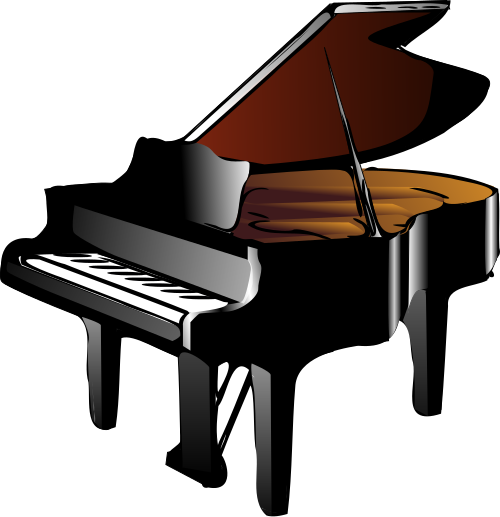
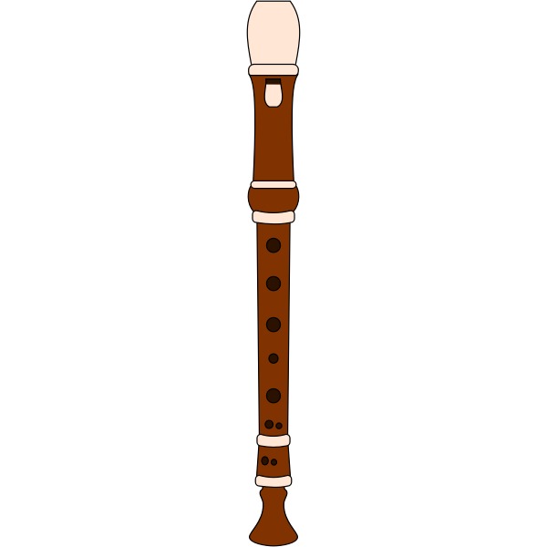

This is a list of my equipment
| Item | Learning curve | Price | Value |
|---|---|---|---|
| Piano | Moderate | 5000+ SEK | High |
| Recorder | Easy | 100 SEK | Medium |
| Guitar | Moderate | 500+ SEK | High |
| Bass | Moderate | 2000+ SEK | High |
| Drums | Hard | 3000+ SEK | High |
Instrument Details
A lot of these instruments are actually pretty loud. There are a couple of options here, you could either go for the electric version of the instruments. This is what I have at home for my guitar and piano but it also will bump up the price by alot. another option is to rent a studio. There are some studios that you can rent for a couple of hours and most of the places have some instruments there. This is a great way to try out some instruments and see if you like it before spending alot of money on it. If you live in a house this is less of a problem.
Piano 
The piano is a fantastic foundational instrument. It lays out all the notes visually, making it easier to understand music theory and chords. It takes some coordination to play with both hands, but it sounds beautiful even when you are just starting out. The main factor here is actually how much space and how loud can it be. You could find a Piano for free but most likely you'll need to have alot of space and probobly have to get someone to tune it for you. looking at electric pianos could be very expensive. Luckily for me, I actually got my mothers old electric piano.
Additional equipment
- Keyboard stand: 300 SEK
- Sustain pedal: 200 SEK
Recorder 
Often the very first instrument we pick up in school in Sweden. It is incredibly accessible and great for learning the basics of breath control, reading sheet music, and playing simple melodies without a steep learning curve. After a while it does become pretty repetitive.
Additional equipment
- Cleaning rod and cloth: 50 SEK
- Sheet music book: 150 SEK
Guitar
A classic for a reason. Whether acoustic or electric, the guitar is versatile and perfect for playing your favorite songs. The hardest part is the first few weeks while you build calluses on your fingers, but it gets much easier after that. A guitar is actually not that loud and could be played in an apartment setting. And this becomes even easier for the electric guitar. Tuning a guitar you could do through your phone with a free app like Guitar tuner.
Additional equipment
- Guitar picks: 20-50 SEK
- Capo: 150 SEK
Bass
The unsung hero of the band. The bass bridges the gap between the rhythm of the drums and the melody of the guitars. It is incredibly satisfying to lock into a groove. It is actually a fairly easy instrument to start playing but you can always level up your playing skills with more advanced techniques.
Additional equipment
- Bass amplifier: 1000 SEK
- Instrument cable: 150 SEK
- Strap: 200 SEK
Drums
The absolute heartbeat of any song. Playing the drums is highly physical and requires building independence between your arms and legs. It is loud, it is energetic, and it is an amazing stress reliever. This is one of the most important instruments when playing with people. If you mess up everybody sounds bad. But having that control could be very rewarding. You are a leader and help guide the other instruments on the right path. This instrument is very hard to play in a setting where you have neighbors. Having an electric drum set is almost a must unless you live in a very remote setting.
Additional equipment
- Extra drumsticks: 100 SEK
- Practice pad: 250 SEK
- Hearing protection: 200 SEK